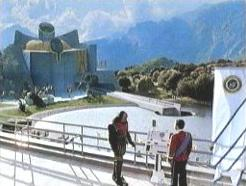

Khitomer |
|
||||
|  |
| Classe | M |
Khitomer si trova in territorio federale nei pressi dei confini con l'Impero Romulano e l'Impero Klingon. Nel 2293 è stato la sede della storica conferenza di pace che ha avvicinato l'Impero Klingon alla Federazione. In seguito il pianeta è diventato la sede di un avamposto Klingon distrutto da un attacco romulano nel 2346.